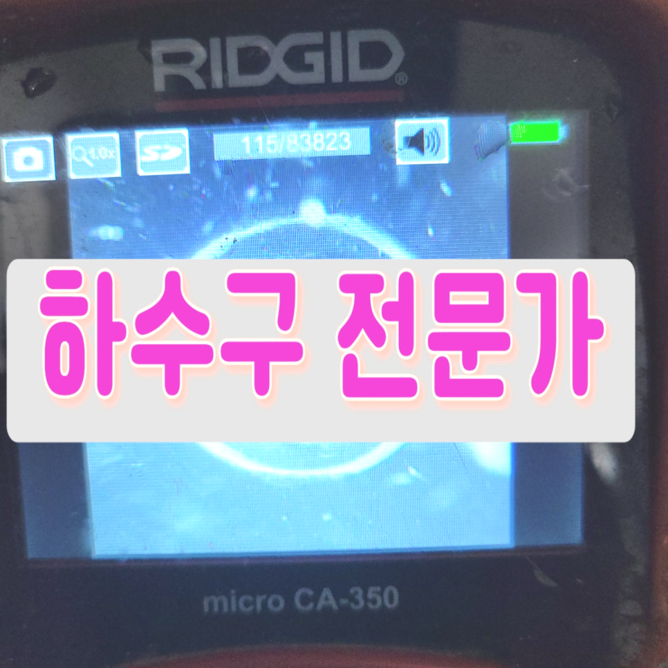
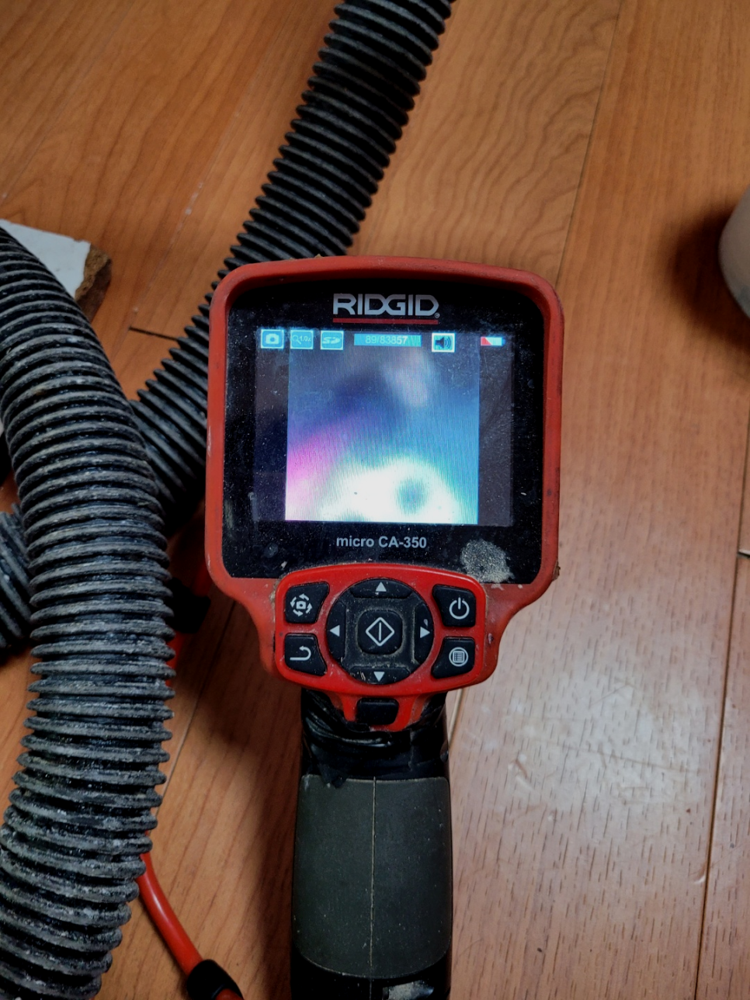
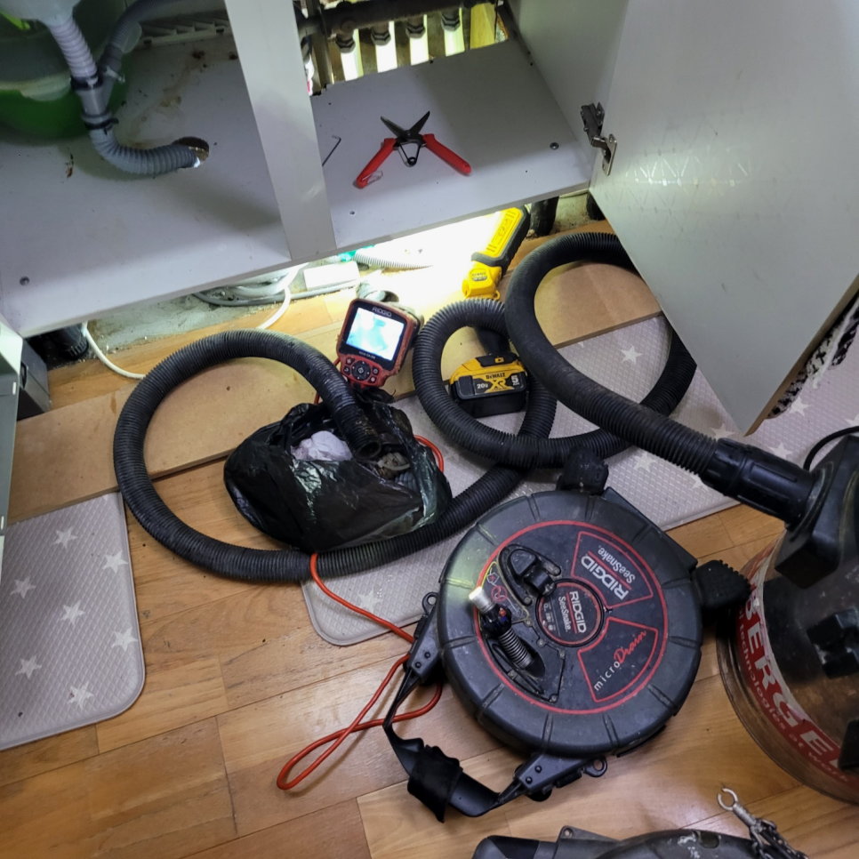
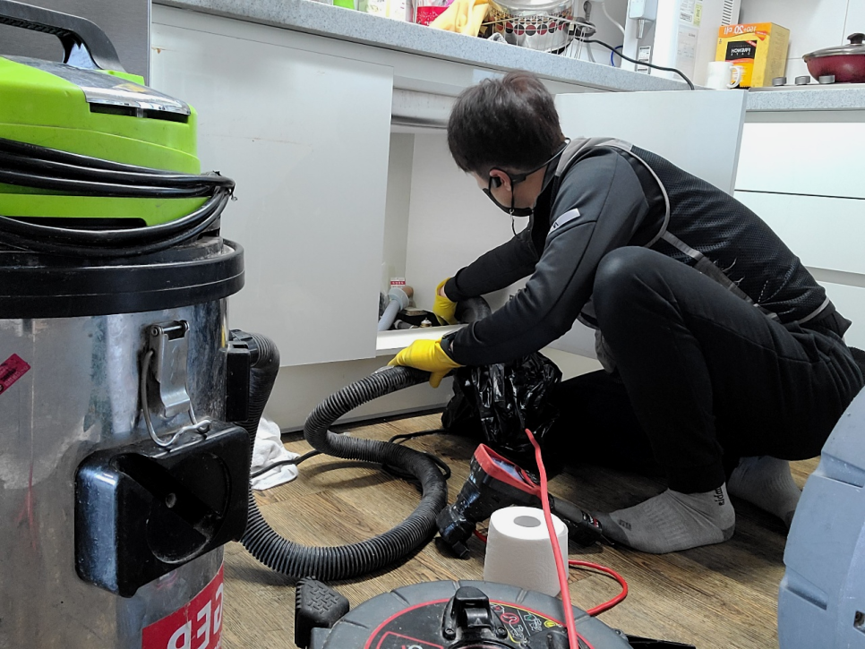
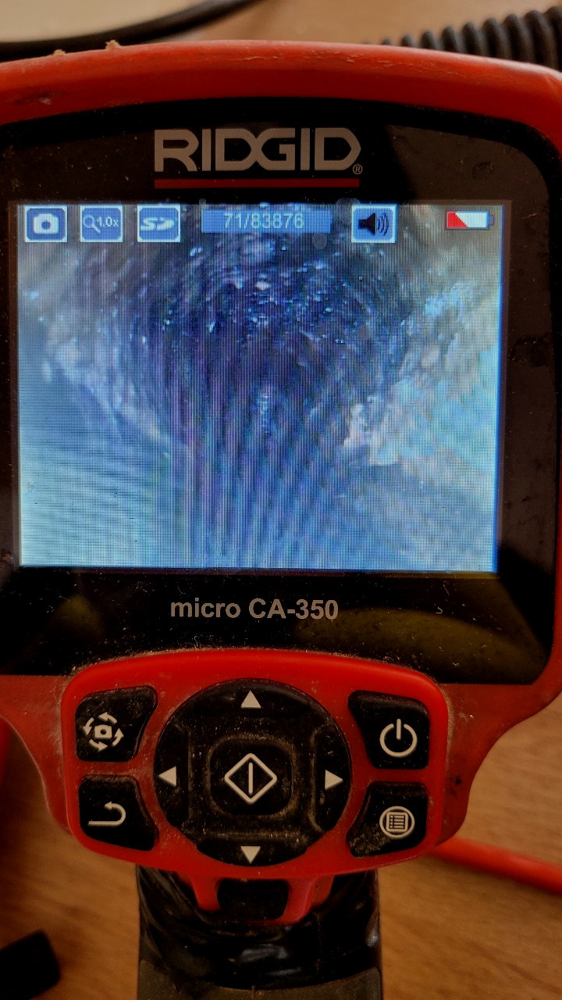
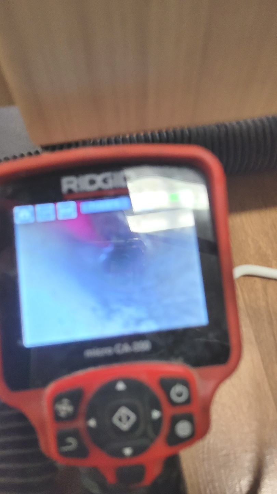
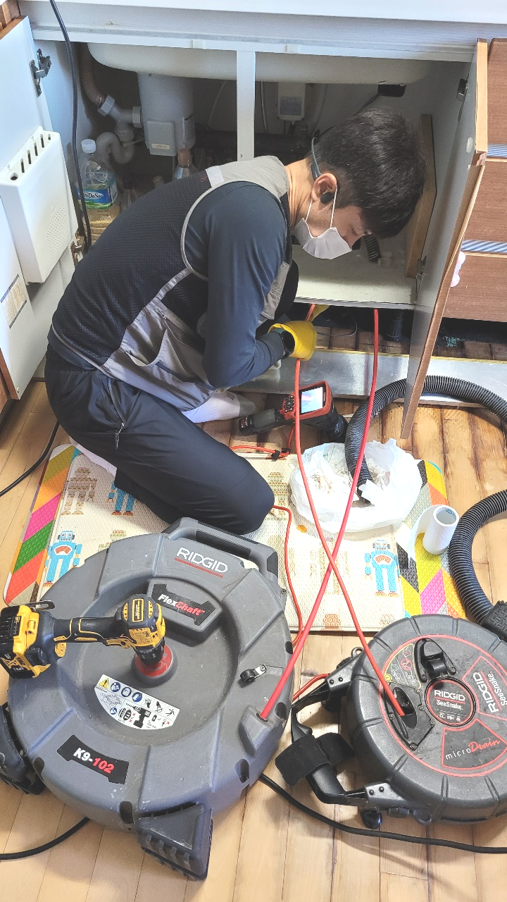

🏠 광주 쌍령동 씽크대막힘 뚫음 초월읍 도평리 하수구뚫는곳 설비업체
광주 쌍령동 싱크대막힘 전문 시공 후기

📋 작업 개요
- 위치: 광주 쌍령동, 쌍령동, 광주
- 서비스 유형: 싱크대막힘, 변기막힘, 하수구막힘, 배관막힘, 역류해결, 뚫는업체, 배관청소, 고압세척
- 작업 일시: 2023. 11. 12. 23:27
- 업체명: 하수구수사대 (010-5615-2118)
🔍 문제 상황
반갑습니다!
설비전문업체 "하수구수사대"를 찾아주셔서 감사드려요^^
우리들이 살아가면서 정말 필요한 배출구 설비시설을 변기,싱크대,세면대 등 물을 사용하는 공간이 아닐까 생각합니다.
배관금방 해결되는 가벼운 경우도 있지만 문제 파악이 확실히 안되는 일은알아서 시도하기보단 믿을 만한 업체에 곧장 의뢰하시는 편이 좋습니다.
광주 쌍령동 씽크대막힘 뚫음 초월읍 도평리 하수구뚫는곳 설비업체

🔎 원인 분석
💡 전문가 진단: 광주 쌍령동 씽크대막힘 뚫음 초월읍 도평리 하수구뚫는곳 설비업체
퇴수구 청소의 작업에는 다양한 장비를 써야합니다. 일상에서는 쉽게 접할 수 없는 장비들이 대부분이고 배수구 속을 살펴볼 때 조차도 초심자들은 실수할 수밖에 없습니다. 크랙을 만드는등 더 큰 증상으로 번져버릴수도 있기에 생각하며 작업을 해야합니다.
수도권 모든 지역에서 경력 있는 배출관기사님들이 대기하고 있기 때문에 계신 지역이 어디든지 방문 드릴 수 있으며 아무리 심각한 상황이라고 할지라도 빠르게 대처해 드리기 위해서 1시간 이내 도착을 약속하고 있습니다.
작업 전에 충분하게 설명을 드리니 걱정만 하지 마시고 일단 물어봐 주세요. 퇴수배관은 집집마다 다르게 생겨 있으며 배관을 막고 있는 원이도 집집마다 다르기에 작업 난이도에 따라 가격이 책정됩니다.
일상생활을 하다 보면 나도 모르게 어느 순간 막히게 되는 경험은 생각 이상으로 많아요. 우리 어떻게 관리를 하느냐에 따라 얼만큼 막혔는지 예상이 되지요. 집에서 꾸준히 청소를 해준다면 하수한번 뚫고 나면 오래도록 사용이 가능해요.
내시경을 내려보니 배관막힘이 일어난 이유는 기름들이 가득 쌓이면서 물이 내려가기 어려운 통로 상태였는데요. 이러한 기름 슬러지들을 제거하기 위해서 배관에 플렉스 샤프트라는 장비를 사용해서 스케일링 작업을 진행하게 되었습니다.

🔧 작업 과정
한 번만의 작업으로 인해서 몇 개월혹은 몇 년 이상 하수구가 막히는 일이 없도록 관리할 수 있기 때문에 많은 분들이 하수도에 정기적인 작업으로 쾌적한 유지를 하고있습니다.
고인 물을 제거하였다면 이후로는 본격적인 고압 세척 작업을 진행해야 합니다.하수 막힘 이 발생하였다면 처음 조치를 취해주어야 하는데요, 초기에 조치를 취하지 않는다면 이후 심각한 문제로 번질 가능성이 큰 편이에요.
사실 대부분의 고객님들이 배수가 막힌다는 건 상상도 해본 적이 없다고 말합니다. 물이 흘러 내려가는 건 아주 어릴 때부터 당연한 일로 여겨졌기 때문이죠. 그러나 저희가 하루에 쉴 틈 없이 현장 출동을 하고 있을 정도로 이 문제는 굉장히 흔한 문제입니다.
대부분은 심하게막힌것이 아니면 기본금액으로 수리할수있지만 낙후된하수도이거나 엄청나게깊숙한곳까지 찌꺼기가쌓여있다면 상황이복잡해지기때문에 추가금액이 발생됩니다
배수관이막혀버렸거나 쓰지못하게됐을때 외면하게되시면 안좋은문제가 일어나는데요.배출구막힘을 생각외로대부분의 사람들이대강뚫고 하루하루지나게되면 심각하지않겠지라는 판단하시고 내버려두시는일이 매우많이있습니다.
가지고있는 배출구전문장비에관해서도 지나칠수없죠.배관청소를 진행할때는 기본적인 기계를써서 짧은시간안에 처리할수있습니다.저희업체는 어떤현장을가도 배관cctv로안을 본다음 육안으로 확인이안됐던부분까지 처리해드리고있습니다.
배수관 내부를 강한 힘으로 이물질들을 빨아들이기 시작하니, 먼지 덩어리는 물론이고 여러 가지 이물질들이 빨려 올라왔고 이 사이에 머리카락 덩어리도 상당량 올라왔습니다. 다행히 딱딱하게 고착화된 오물은 없는 것 같았습니다.
10년 이상의 경력자들이 다년간 쌓아온 여러 현장 경험을 통하여 누구보다 철저히 원인을 조사하고 분석해 완벽한 해결을 해드리겠습니다. 계속되는 반복 막힘에 지쳐계시다면 저희를 불러주세요. 믿고 맡길 수 있는 배관 청소입니다.


✅ 작업 완료
어느 지역에 계시든지 수도권 모든 곳에서 대기 중이기에 문의를 받자마자 60분 안으로 달려갑니다. 위급할 땐 곧바로 도움받으실 수 있기에 이점이 크게 다가오실 겁니다.
밤이든 낮이든 근무 중이기에 언제가 됐든 간에 의뢰해 주세요. 직접 보지 않고선 정확한 금액 안내가 힘들겠지만 기준 금액만큼은 말씀 가능하니 여쭙고 싶은 상황이 있으실 경우에는 전화 주시면 되십니다.하수관가 막혀 대처하고 싶으시거나 상담을 원하실 경우 전화 걸어주세요
#하수구막힘 #하수구뚫음 #하수구역류 #씽크대막힘 #싱크대역류 #오수관막힘 #하수구청소 #욕실하수구막힘 #변기막힘 #하수구뚫는비용 #싱크대수리 #화장실막힘




⚠️ 주방 싱크대 배관 막힘 예방 수칙
- ✅ 기름기가 묻은 식기나 프라이팬은 설거지 전 키친타올로 반드시 기름때를 닦아내세요.
- ✅ 주기적으로 싱크대 개수대에 뜨거운 물을 가득 받아 한 번에 내려 배관 내부 기름을 씻어내세요.
- ✅ 배수구 거름망을 미세한 필터로 사용하시고 음식물 찌꺼기가 틈으로 새어 들지 않게 관리하세요.
- ✅ 베이킹소다와 식초를 뜨거운 물과 함께 일주일에 한 번씩 부어주면 배관 살균과 막힘 예방에 좋습니다.
💡 핵심 정리
- 확실한 장비 작업(내시경 점검 및 샤프트 스케일링)으로 원인을 뿌리 뽑습니다.
- 작업 후 1년 이내에 동일한 부위 재발 시 100% 무상 A/S 서비스를 보장합니다.
- 서울 · 경기 · 인천 전 지역에 24시간 언제든 긴급 출동할 수 있도록 항시 대기 중입니다.
❓ 자주 묻는 질문 (FAQ)
🚨 광주 쌍령동 싱크대막힘 문제로 고민이신가요?
정확한 원인 진단과 확실한 시공으로 재발 없는 해결을 약속드립니다.
24시간 긴급 출동 | 서울 · 경기 · 인천 전지역 | 1년 내 재발 시 무상 A/S